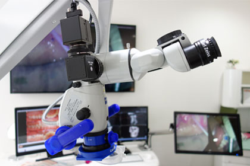
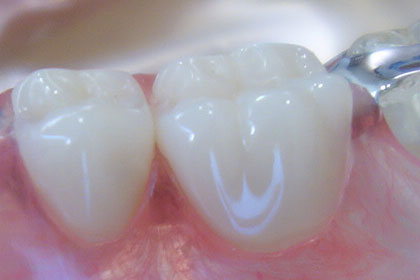
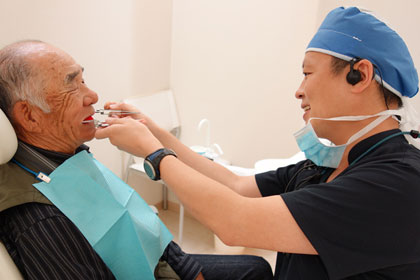

Cosmetic Dentistry
審美治療
このようなお悩みはありませんか？
- 透明感のある自然な笑顔になりたい
- 治療した歯と歯ぐきの境目の黒ずみが気になる
- 他の歯と色が違うことが気になる
- 歯のがひび割れを治したい
- むし歯の再発リスクの少ない歯にしたい
審美治療とは
～あなたの第一印象を決める口元の役割～
大手美容整形のアンケートによれば、第一印象が決まる顔のパーツ第一位は『目』です。 続いて『口』があげられます。あなたは、『目』と『口』の共通点に気が付いていますか？ それは『白い部分がある』という点です。 目も歯も『自然な白さ』が、印象の良さを左右しているのです。 あなたは話す時、笑った時の『歯の自然な白さ』に自信はありますか？… ナチュラルティースでは、あなたの魅力を引き出す自然な口元を提案します。
ナチュラルティースの技術
～精密な歯と歯ぐきの再現～
人工の歯を作製した時には、視覚的に圧倒的な治療技術の差が出ます。特に歯と歯ぐきの間の境目に、その技術の差が顕著に出ます。
長年使用している内に、歯ぐきが黒ずんだ様に見えたり、治療した歯が不自然に見えるがあってはなりません。
当院では自然な歯（ナチュラルティース）をあなたにお届けする為に様々な技術を取り入れています。
-
マイクロスコープによる精密治療

裸眼の２０倍で見えるマイクロスコープを活用する事で、より高い精度を実現できます。
特に歯と歯ぐきの境目を高い精度で『自然な状態』に再現できる事が強みとなります。 また、せっかく良い歯を装着しても『長持ち』しなければ意味がありません。 マイクロスコープで歯の根を徹底的に清掃する事で、再治療のリスクを極限まで低く抑えています。 -
不自然に見えない歯の色を再現
装着した歯の色が不自然では、かえって目立つ結果となります。 その様な事が起きない為には『他の歯と同じ色』にする必要があります。 しかし、実際にはこの色味の再現はとても難しいのです。それは目視では限界があるからです。 当院では、治療スタートの時点から『何度もお口の写真』を撮影しています。 その複数の写真を分析する事で、誰からも気づかれない自然な色の再現に成功しています。
-
お口全体のバランスを考えた設計

人工歯は『かみ合わせ』を考えて作製する事が大切です。
一見当たり前の様に感じる事ですが、当院に来院される患者さんの中には、歯の治療をしてから、アゴが痛くなった…、食べる時に違和感がでる様になった…という相談があります。
これは『治療する歯だけ』しか見ていない事で起きる現象です。
当院では、お口全体のバランスを考えた設計を提案しています。その為、主訴以外の箇所まで治療提案する事があります。- 『長持ちしなければ…快適に噛む事ができなければ…治療する意味がない』と考えていますので、ご理解のほどをお願いしております。 -
待合室に入ったら…

歯を精密に形取りをしても、いざ装着する時に理想的な位置におさまらない時があります。
これは自然治癒力が大きく関係しています。ケガをした後、傷口がぷっくり膨らんだりした経験はないでしょうか？
これと同じく治療する箇所の歯ぐきも歯が無い状態では、元の形を維持する事はありません。その為に最終的な人工歯を造る間、仮歯を装着する事で歯ぐきの変形を抑える訳です。
しかし人工歯と同様に『精密な仮歯』でなければ、歯と歯ぐきの境目が不自然になってしまいます。当院では、仮歯も最高の素材と技術で作製しています。
『歯の素材』について
歯は、前歯・奥歯といった大きな枠組みだけではなく、配置によって１本１本『役割』が異なります。
また、現在のお口の状況によっても『最適な素材』は変わります。
精密な診断に加えて、素材の能力を知り尽くさなければ『長持ち』するお口のバランスは提案できません。
ナチュラルティースでは、あなたにとって最適な歯を提案する事を約束します。